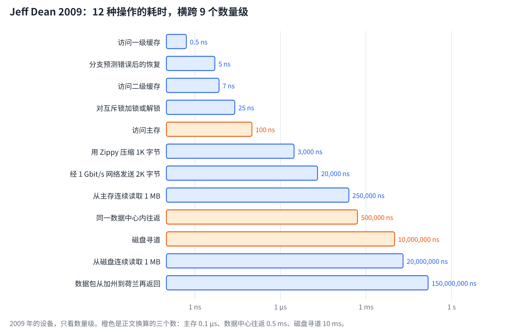
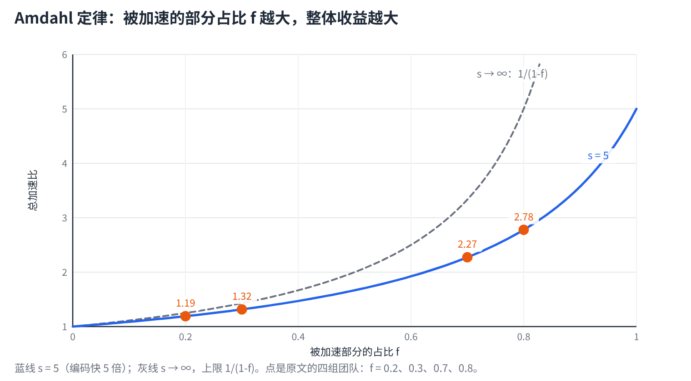
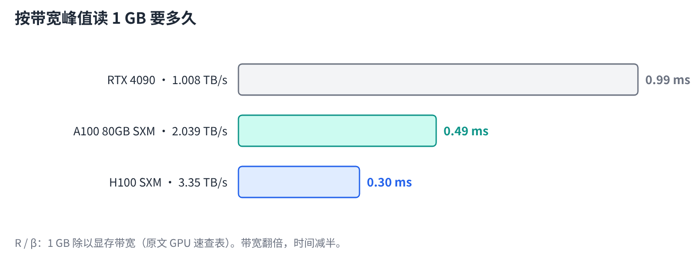
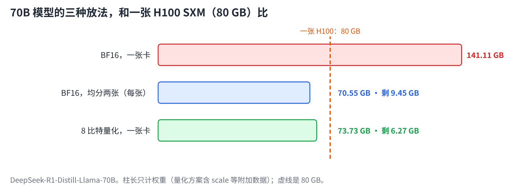
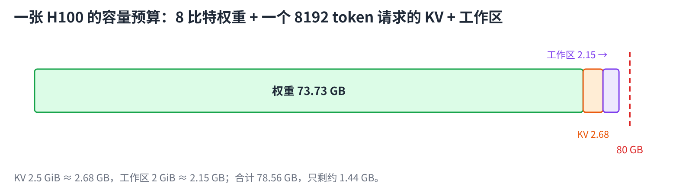
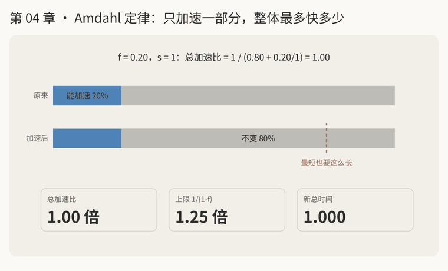

第 04 章 · 系统设计的关键数字：容量、算力、带宽、延迟
本地运行
git clone https://github.com/wikieden/ai-infra-from-constraints
cd ai-infra-from-constraints/code/notebooks
pip install jupyterlab torch numpy
jupyter lab ch04_key_numbers.ipynb也可以下载后直接用 VS Code 打开 .ipynb 运行。需要 GPU 的章节在 Colab 里选「代码执行程序 → 更改运行时类型 → GPU」。
本章回答：动手之前，怎么用几个数字判断一个方案行不行？只加速一部分，整体最多快多少？一张卡能不能放下一个 70B 模型？网卡的 400 Gbit/s 等于每秒多少 GB？
讲解日期：2026-11-24 · 上一章：第 03 章 从存储程序到数据流执行 · 下一章：第 05 章 用几个数字估算一次模型执行
对应原文：materials/ai-infra-book/manuscripts/01-初识 AI Infra.md§1.2 L105–L231（表 L115–L128、图 1-6ch01/figure-1-4-numbers.svg、GPU 速查表 L186–L191、图 1-7ch01/figure-1-capacity-path.svg）
本章缩写：BF16 = Brain Float 16（Google Brain 提出的 / 浮点 / 16 位）· FLOP = FLoating-point OPeration（浮点 / 运算，一次）· FLOPs = 浮点运算总次数 · FLOP/s = 每秒浮点运算次数 · FP32 = Floating Point 32（浮点 / 32 位）· GiB / MiB / KiB = Gibibyte / Mebibyte / Kibibyte（二进制的 G / M / K 字节：\(2^{30}\) / \(2^{20}\) / \(2^{10}\)）· HBM = High Bandwidth Memory（高 / 带宽 / 内存）· KV = Key-Value（键 / 值）· MBU = Memory Bandwidth Utilization（内存 / 带宽 / 利用率）· MFU = Model FLOPs Utilization（模型 / 浮点运算 / 利用率）· SXM = NVIDIA 的模块形态（插在主板上的 GPU 模块，区别于 PCIe 插卡）。全部缩写见 缩写与术语表
讲解
第一步：先记住数量级：Jeff Dean 的"每个人都该知道的数字"（2026-11-24）
类比：出门前先估路程。 去楼下便利店、去隔壁城市、去另一个国家，不用精确到分钟，先知道是"几分钟、几小时、几天"，就能决定走路、开车还是坐飞机。
原文 L109–L128：Jeff Dean 2009 年演讲里的 12 个数（2009 年的设备，只用来看数量级）：

图 4-1 · 横轴对数刻度，每格差 10 倍。访问一级缓存 0.5 ns，跨大洋往返 1.5 亿 ns。
单位（原文 L111）：
| 单位 | 等于 | 注意 |
|---|---|---|
| 1 μs（微秒） | 1000 ns | 1 ns 是十亿分之一秒 |
| 1 ms（毫秒） | 1000 μs | |
| 1 byte（字节） | 8 bit（比特） | 网速常用 bit/s，存储常用 byte |
| KB / MB / GB / TB | \(10^3\) / \(10^6\) / \(10^9\) / \(10^{12}\) 字节 | 十进制，厂商和本书都用它 |
| KiB / MiB / GiB | \(2^{10}\) / \(2^{20}\) / \(2^{30}\) 字节 | 二进制，相减之前要先换成同一种 |
例子：取三个数换算（原文 L130）。
| 操作 | ns | 换算 |
|---|---|---|
| 访问主存 | 100 | 0.1 μs |
| 同一数据中心内往返 | 500,000 | 0.5 ms |
| 磁盘寻道 | 10,000,000 | 10 ms |
磁盘寻道是主存访问的 \(10^7 / 10^2 = 10^5\) 倍，也就是十万倍。
一句话：动手之前先看数量级；差十万倍的两件事，不用精确算也知道该先优化哪个。
第二步：等待会累加；只加速一部分，整体最多快多少：Amdahl 定律（2026-11-24）
类比：做一顿饭。 炖汤要 2 小时，切菜 10 分钟。你刀工练得再快，这顿饭也快不了多少；想早点吃饭，得想办法缩短炖汤。
例子（原文 L138）：一个请求串行做 20 次寻道，每次 10 ms，CPU 计算一共 1 ms，总共 201 ms。
| 改法 | 省了多少 | 新总时间 |
|---|---|---|
| CPU 算快一倍 | 0.5 ms | 200.5 ms |
| 数据连续放置，寻道从 20 次降到 10 次 | 100 ms | 101 ms |
公式（原文 L145）：原时间里比例 \(f\) 的部分加速 \(s\) 倍，其余不变，
- \(f\)：被加速的部分占原总时间的比例（fraction）。
- \(s\)：这部分加速了几倍（speed-up factor）。
- \(s\) 再大，总加速比也不超过 \(1/(1-f)\)：剩下那部分一点没快。

图 4-2 · 横轴是 \(f\)，纵轴是总加速比。蓝线 \(s = 5\)，灰线 \(s \to \infty\)（上限 \(1/(1-f)\)）。标出了原文 AI 编程工具的两组团队。
例子（原文 L150–L152）：AI 编程工具让编码快 5 倍（\(s = 5\)）。
| 团队 | 编码占比 \(f\) | 总加速比 |
|---|---|---|
| 大公司，开会审批多 | 0.2 | \(1/(0.8 + 0.04) \approx 1.19\) |
| 大公司 | 0.3 | \(1/(0.7 + 0.06) \approx 1.32\) |
| 创业团队 | 0.7 | \(1/(0.3 + 0.14) \approx 2.27\) |
| 创业团队 | 0.8 | \(1/(0.2 + 0.16) \approx 2.78\) |
以 \(f = 0.2\) 为例：100 小时里编码 20 小时，缩到 4 小时，其他 80 小时不变，总共 84 小时。
一句话：被加速的部分原来占多少时间，决定了整体能快多少；局部再快，也要放回完整流程里算。
第三步：四类数字：容量、计算吞吐、带宽、延迟（2026-11-24）
类比：开一家餐馆要看四个数。 冰箱多大（容量），灶台一小时能炒几盘（计算吞吐），从仓库到后厨的传送带一小时运多少货（带宽），叫一次货要等多久才到（延迟）。
公式（原文 L162–L166）：一个任务要保存 \(M\) 字节、做 \(F\) 次浮点运算、经某个接口读写 \(R\) 字节；加速器有容量 \(M_{\mathrm{cap}}\)、计算吞吐 \(\Pi\)、接口带宽 \(\beta\)：
- \(M\)：要同时存下的字节数（M = memory）；cap = capacity（容量）。
- \(F\)：浮点运算次数（F = FLOPs）；\(\Pi\)（读作 pi，大写）：每秒能做的浮点运算数。
- \(R\)：要读写的字节数（R = read/write）；\(\beta\)（读作 beta）：每秒能搬的字节数。
- 一份数据可以存一次、读很多次，所以 \(M\) 和 \(R\) 要分开算（第 02 章：权重存 16.38 GB，每步读 15.14 GB）。
- \(\Pi\)、\(\beta\) 取峰值时，两个 \(T\) 是时间下界：硬件的物理极限，软件怎么写都不可能更快。
利用率（原文 L170）：实际耗时 \(T\) 离下界多远。
两者都不超过 1；越接近 1，越接近硬件极限。
延迟（原文 L180）：发起一次操作要等多久。传大块数据时，耗时主要看"数据量 ÷ 带宽"；小请求还得一次次等时，启动和往返时间可能成为大头。
例子：三张 GPU 的资源速查表（原文 L186–L191；BF16 输入、FP32 累加、稠密矩阵的峰值）。
| 资源或操作 | RTX 4090 | A100 80GB SXM | H100 SXM |
|---|---|---|---|
| 显存容量（GB） | 24 | 80 | 80 |
| 显存带宽（TB/s） | 1.008 | 2.039 | 3.35 |
| BF16 矩阵峰值（TFLOP/s） | 165.2 | 312 | 989.4 |
| 按带宽峰值读 1 GB（ms） | 0.99 | 0.49 | 0.30 |
最后一行就是 \(T_{\mathrm{memory}} = 1\ \mathrm{GB} / \beta\)。例如 H100：\(10^9 / (3.35 \times 10^{12}) \approx 0.30\) ms。

图 4-3 · 按带宽峰值读 1 GB 的时间。带宽翻倍，读同样多的数据时间减半；算力同理。
场景代码：在一台有 GPU 的机器上，用 PyTorch 粗测显存带宽，就是"搬了多少字节 ÷ 花了多久"（《PyTorch 从里到外》第 24 章讲了更规范的计时）：
import torch
x = torch.empty(2 * 1024**3 // 2, dtype=torch.bfloat16, device="cuda") # 2 GiB
y = torch.empty_like(x)
start, end = torch.cuda.Event(enable_timing=True), torch.cuda.Event(enable_timing=True)
start.record(); y.copy_(x); end.record(); torch.cuda.synchronize()
ms = start.elapsed_time(end) # 毫秒
moved = 2 * x.numel() * x.element_size() # 读一遍 + 写一遍
print(f"有效带宽 ≈ {moved / ms / 1e9:.0f} TB/s") # 字节/毫秒 → TB/s
一句话：容量看放不放得下，算力和带宽把工作量换成时间，延迟看小请求要等多久；按峰值算出的是下界，实际耗时和它一比就是利用率。
第四步：把参数换成字节，再换成要几张卡（2026-11-24）
类比：搬家前先量家具。 先算家具总体积，再看一辆车装不装得下；装不下就分两车，或者把能拆的拆小（量化）。
公式（原文 L201）：
- \(N\)：参数个数；\(b_W\)：每个权重占几字节（W = weight；BF16 是 2，8 位整数是 1）。
例子（原文 L199–L211）：DeepSeek-R1-Distill-Llama-70B，稠密模型，约 705.54 亿个参数。
| 方案 | 权重 | 放在 H100 SXM（80 GB）上 |
|---|---|---|
| BF16，一张卡 | \(70{,}553{,}706{,}496 \times 2 \approx 141.11\) GB | 放不下 |
| BF16，均分两张卡 | 每张约 70.55 GB | 每张剩约 9.45 GB；两卡之间要交换中间结果（第 6 章） |
| 8 比特分组量化，一张卡 | 73.73 GB（每 128 个权重共享一个 scale，部分参数仍用 BF16） | 剩约 6.27 GB |
141.11 GB 约等于 131.42 GiB：卡的容量和权重大小要换成同一种单位再相减。

图 4-4 · 同一刻度上的三种放法。虚线是一张 H100 SXM 的 80 GB。
容量预算（原文 L220）：显存里不止权重，还有上下文状态和工作区。
8 比特方案，一个 8192 token 的请求：KV 缓存 2.5 GiB ≈ 2.68 GB，工作区预留 2 GiB ≈ 2.15 GB，
刚好放得下。换成 24 GB 的 RTX 4090，三张合计 72 GB，连 73.73 GB 的权重都放不下，至少要四张，还要逐卡检查 KV 和工作区。

图 4-5 · 一张 H100 上的容量预算：只剩约 1.4 GB 余量，再加一个同样长的请求就放不下了。
场景代码：不下载权重，只读模型的 safetensors 索引文件就能算出权重字节数（Hugging Face Hub 上的模型都有这个文件）：
import json
from huggingface_hub import hf_hub_download
path = hf_hub_download("deepseek-ai/DeepSeek-R1-Distill-Llama-70B", "model.safetensors.index.json")
total = json.load(open(path))["metadata"]["total_size"] # 所有权重文件的总字节数
print(f"{total / 1e9:.2f} GB = {total / 2**30:.2f} GiB") # 十进制 GB 与二进制 GiB
一句话：参数数 × 每个参数的字节数 = 权重大小；再加上 KV 和工作区，和每张卡的容量比，就知道要几张卡、要不要量化。
第五步：网速的 bit 和存储的 byte（2026-11-24）
类比：水管标的是"每秒多少升"，水桶标的是"能装多少斤"：单位不同，先换算再比较。
公式（原文 L227）：
例子：一张 400 Gbit/s 的 ConnectX-7 网卡，线速（链路的标称速率）= 400 / 8 = 50 GB/s，按线速传 1 GB 要 1 / 50 s = 20 ms。
实际还要加上每次传输的启动时间、协议开销，以及共用链路的其他流量，应用拿到的带宽会比线速低。
一句话：网卡的 Gbit/s 除以 8 才是 GB/s；线速是上限，实际还要扣启动、协议和争抢。
动画演示：Amdahl 定律：加速一部分，整体最多快多少

可交互版：animations/04-key-numbers.html（两个滑块：被加速部分的占比 \(f\)，加速倍数 \(s\)）。
怎么看：
- 一条横条是原来的总时间，蓝色是能被加速的部分（占比 \(f\)），灰色是不变的部分（第二步）；
- 播放时 \(s\) 从 1 变到 2、5、10、100：蓝色越缩越短，灰色一动不动；
- 右边的数字是总加速比，最后停在上限 \(1/(1-f)\) 附近；
- 先演 \(f = 0.2\)，再演 \(f = 0.8\)：同样的 \(s\)，收益差很多。
练习与作答记录
题 1（第二步）：一个流程里能加速的部分占 37%，加速 4 倍。总加速比是多少？就算这部分加速到无穷快，最多又是多少？
作答记录：（待作答）
题 2（第三、四步）：把第 02 章的 Qwen3-8B（BF16 权重 16.38 GB，每个 token 的 KV 144 KiB）放在一张 24 GB 的 RTX 4090 上，预留 2 GiB 工作区。单个请求最多能有多少个 token 的上下文？（注意 GB 和 GiB、KiB 的换算。）
作答记录：（待作答）
题 3（第五步）：通过一条 100 Gbit/s 的链路，按线速把 16.38 GB 的权重传到另一台机器，最少要多久？实际为什么会更久？
作答记录：（待作答）
原书练习 1-2（原文 L229–L231）：70B 模型在 H100 和 RTX A6000 上的多种放法。想多练可以做；最后一问"400 Gbit/s 换成 GB/s"正文第五步已经算过。
口诀
先看量级再动手，十万倍差别一眼瞅；
加速一段看占比，剩下不动是上限；
放得下看容量，耗多久看算力和带宽；
参数乘字节算权重，bit 除以八才是 byte。
本章复习卡片
I10（Amdahl 定律）、I11（四类数字与下界、MFU / MBU）、I12（容量预算公式）、I13（GB 与 GiB、bit 与 byte）。练习做完后，按答错、卡住的地方再补。
附录 · 延伸阅读
留给以后深入学习用，不影响本章主线。★ 是建议先读的。
推荐阅读
| 读什么 | 读哪里 | 读它为了什么 |
|---|---|---|
| ★ AII 第 1 章 | §1.2 L105–L231 | 本章原文，含 Dean 表、Amdahl、GPU 速查表、70B 容量算例 |
| ★ AII 第 1 章脚注 | L476（[^dean]）、L478（[^h100]）、L498（[^real70]）、L504（[^gpu-numbers]） |
每个数字的出处：Dean 演讲 PDF、H100 白皮书、权重索引、固定 GPU 规格 |
| 《CUDA 从线程到 Tensor Core》第 9 章 | 全章 | 用算力和带宽两个数画 roofline，下一章会用到 |
| 《PyTorch 从里到外》第 35 章 | 量化部分 | 8 位量化和 scale 在 PyTorch 里怎么写 |
| Jeff Dean, LADIS 2009 演讲 | "Numbers Everyone Should Know" | 原始的 12 个数和纸笔估算方法 |
数学原理
- Amdahl 定律：新时间 = 不变部分 \((1-f)\) + 加速部分 \(f/s\)（以原总时间为 1）；加速比是它的倒数。\(s \to \infty\) 时极限是 \(1/(1-f)\)。
- 单位换算：十进制 \(10^3\)，二进制 \(2^{10} = 1024\)；1 GiB ≈ 1.074 GB。bit 和 byte 差 8 倍。
- 下界：用峰值算出的时间不可能被超越，因为峰值由硬件的计算单元数量、频率和接口宽度决定。
公式清单
| 公式 | 意思 |
|---|---|
| \(\mathrm{Speedup} = 1/[(1-f) + f/s]\) | Amdahl 定律 |
| \(\mathrm{Speedup} \le 1/(1-f)\) | 只加速一部分的上限 |
| \(M \le M_{\mathrm{cap}}\) | 容量够不够 |
| \(T_{\mathrm{compute}} = F/\Pi\)，\(T_{\mathrm{memory}} = R/\beta\) | 计算和读写的时间下界 |
| \(\mathrm{MFU} = F/(\Pi T)\)，\(\mathrm{MBU} = R/(\beta T)\) | 离硬件极限多远 |
| \(M_W = N b_W\) | 权重字节数 |
| \(M_W + M_{\mathrm{state}} + M_{\mathrm{work}} \le M_{\mathrm{cap}}\) | 容量预算 |
| GB/s = Gbit/s ÷ 8 | 网速换算 |
代码对照：把本章的数字用代码算一遍
纯 Python，不需要 GPU。代码在仓库本地
ai-infra/solutions/chapter-code/ch04_key_numbers.py，配套测试tests/test_ch04.py：
bash cd ai-infra/solutions/chapter-code uv run python ch04_key_numbers.py # 一步一步打印 uv run pytest tests/test_ch04.py
讲义 ↔ 代码：
| 讲义 | 公式 | 写法 | 跑出来 |
|---|---|---|---|
| 第一步 寻道 ÷ 主存 | \(10^7 / 10^2\) | DEAN_NS |
100000 倍 |
| 第二步 寻道例子 | 20 × 10 + 1 | seek_example() |
201 → 200.5 / 101 ms |
| 第二步 AI 编程工具 | Amdahl | amdahl(0.2, 5) … amdahl(0.8, 5) |
1.19、1.32、2.27、2.78 |
| 第三步 读 1 GB | \(1\ \mathrm{GB}/\beta\) | read_ms(1e9, gpu) |
0.99、0.49、0.30 ms |
| 第四步 70B BF16 | \(N b_W\) | weight_gb(70_553_706_496, 2) |
141.11 GB = 131.42 GiB |
| 第四步 容量预算 | 三项相加 | budget_gb(73.73, 2.5, 2) |
78.56 GB |
| 第五步 网卡 | ÷ 8 | gbit_to_gbyte(400) |
50 GB/s，1 GB 要 20 ms |
关键几行：
def amdahl(f, s):
return 1 / ((1 - f) + f / s) # 不变的部分 + 加速后的部分，取倒数
def budget_gb(weights_gb, kv_gib, work_gib):
gib = 2**30 / 1e9 # 1 GiB = 1.0737 GB，先换成同一种单位
return weights_gb + kv_gib * gib + work_gib * gib
代码里才看得到的 3 件事：
budget_gb里 KV 和工作区是按 GiB 给的，权重是 GB；不换算直接相加会少算约 0.33 GB，正好吃掉一部分余量。amdahl(f, float("inf"))在 Python 里能直接算出上限 \(1/(1-f)\)，因为f / inf == 0。- 原书的 70.55、9.45 等数都是四舍五入后的两位小数，测试里用
round(…, 2)比较。
自己改一改（不影响练习答案）：
- 把
amdahl的s改成float("inf")，看 \(f = 0.2\) 和 \(f = 0.8\) 的上限分别是多少。 - 用
read_ms算一算三张卡各读 16.38 GB（Qwen3-8B 的权重）要多久。 - 把
budget_gb的 KV 从 2.5 GiB 加倍，看还放不放得下。